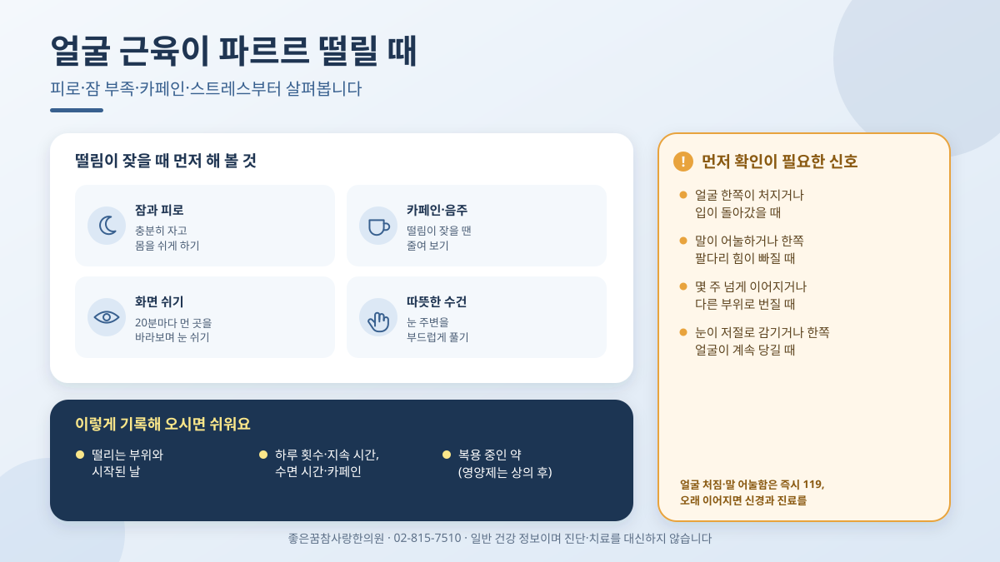

이종호 한의사 감수좋은꿈참사랑한의원 대표원장 (한의사 면허번호 19769)발행 2026-11-23 · 수정 2026-11-27
이 글의 차례
- 왜 이런 불편이 생길 수 있나요
- 왜 눈꺼풀이 유독 잘 떨릴까요
- 눈꺼풀 떨림과 한쪽 얼굴 떨림은 어떻게 다른가요?
- 자주 하는 오해
- 예를 들면 이런 경우입니다
- 먼저 이렇게 여쭙니다
- 일상에서 먼저 해 볼 수 있는 것
- 카페인은 어떻게 줄이면 좋을까요?
- 화면 앞에서 눈을 쉬게 하는 방법
- 잠은 어떤 순서로 되찾으면 좋을까요?
- 영양제를 먹어 보면 어떨까요?
- 먹는 약이 있다면 함께 알려 주세요
- 바쁜 시기를 지나는 중이라면
- 목과 어깨의 긴장은 왜 함께 살피나요
- 눈이 마를 때는 이렇게 해 보세요
- 술은 떨림에 어떤 영향을 주나요
- 떨림이 신경 쓰여 더 긴장될 때
- 한의원에서 함께 살필 수 있는 경우
- 얼마나 지켜보고, 언제 상담하면 좋을까요
- 스스로 점검해 보세요
- 이렇게 기록해 오시면 상담이 쉬워집니다
- 이런 증상은 먼저 확인이 필요합니다
- 함께 읽으면 좋은 글
회의 자료를 넘기다가, 거울 앞에서 화장을 하다가, 갑자기 눈 밑이 파르르 떨려요. 손으로 눌러 보면 잠깐 멈췄다가 다시 떨리고, 누가 알아챌까 봐 괜히 눈을 비비게 되죠. 하루에도 몇 번씩 그러니 신경이 쓰이실 수밖에 없어요.
진료실에서 이 말씀을 정말 자주 들어요. "이거 혹시 뭐 큰 병 오는 건 아니죠?" 그 걱정 충분히 이해해요. 그런데 눈꺼풀이나 눈 밑이 떨리는 건 대부분 피로와 잠 부족, 카페인, 스트레스와 관련된 일시적인 떨림이에요. 바쁜 시기를 지나는 몸에선 원래 그래요.
여기서 꼭 구분해 두셨으면 하는 게 있어요. '눈꺼풀이 잠깐씩 떨리는 것'과 '얼굴 한쪽이 번지듯 떨리는 것'은 다른 얘기예요. 앞의 것은 생활을 돌아보는 신호로 보는 경우가 많고, 뒤의 것은 확인을 서두르는 쪽이에요.
떨림 말고 다른 변화가 함께 있다면 글 아래쪽 '먼저 확인이 필요합니다' 항목부터 살펴 주세요. 몇 주 넘게 이어지거나 번진다면 신경과 진료가 먼저입니다.
왜 이런 불편이 생길 수 있나요
- 잠이 부족하고 피곤하면 눈 주변 근육이 저절로 떨리는 일이 흔합니다.
- 카페인과 음주, 긴장이 겹치면 떨림이 잦아질 수 있습니다.
- 화면을 오래 보면 눈이 쉽게 피로해집니다.
- 눈이 건조하면 눈을 자주 깜빡이고 비비게 되어 눈 주변이 더 예민해질 수 있습니다.
- 드물게 얼굴 신경 문제로 한쪽 얼굴이 계속 떨리거나 당기는 경우가 있어 구분이 필요합니다.
왜 눈꺼풀이 유독 잘 떨릴까요
눈꺼풀을 움직이는 근육은 아주 얇고 작아서, 피로나 긴장이 쌓이면 다른 곳보다 먼저 저절로 움찔거리기 쉽습니다. 하루에도 수천 번 깜빡이며 쉬지 않고 일하는 근육이라 잠이 부족하거나 화면을 오래 본 날 그 피로가 먼저 드러나는 것입니다.
대개 아래 눈꺼풀이나 위 눈꺼풀 한 군데가 몇 초씩 파르르 떨리다 멈추기를 반복합니다. 남이 보기에는 잘 티가 나지 않는데 본인은 무척 신경 쓰이는 것이 흔한 모습입니다. 잠을 푹 자고 카페인을 줄이면 며칠에서 몇 주 사이 잦아드는 경우가 많습니다.
눈꺼풀 떨림과 한쪽 얼굴 떨림은 어떻게 다른가요?
눈꺼풀 한 군데만 잠깐씩 떨리는 것은 피로와 관련된 흔한 떨림입니다. 반면 한쪽 눈 주변에서 시작한 떨림이 시간이 지나며 같은 쪽 뺨과 입가까지 함께 씰룩이고, 자는 동안에도 이어진다면 얼굴 신경이 자극받는 경우일 수 있어 신경과 확인이 필요합니다.
양쪽 눈이 저절로 꽉 감기거나 깜빡임이 지나치게 잦아 눈을 뜨고 있기 힘들다면 이것도 단순한 피로 떨림과는 다른 모습입니다. 이런 경우에도 신경과 진료를 먼저 받아 보시길 권합니다.
그래서 저는 떨림이 어디서 시작해 어디까지 번지는지, 한쪽인지 양쪽인지, 자는 동안에도 이어진다고 들은 적이 있는지를 꼭 여쭙니다. 짧은 영상을 찍어 오시면 말로 설명하는 것보다 훨씬 정확하게 볼 수 있습니다.
자주 하는 오해
- 눈이 떨리면 영양제부터 먹어야 한다고 여기기 쉽지만, 대부분은 잠 부족과 피로, 카페인, 긴장과 관련되어 생활을 먼저 점검합니다.
- 떨림이 있으면 뇌졸중의 신호라고 걱정하기 쉽지만, 눈꺼풀만 잠깐 떨리는 것은 대개 일시적입니다. 다만 떨림 말고 다른 증상이 함께 있다면 아래 '이런 증상은 먼저 확인이 필요합니다'를 먼저 살펴 주세요.
- 며칠 지나면 저절로 멈추니 그냥 두면 된다고 넘기기 쉽지만, 몇 주 넘게 이어지거나 입가와 뺨까지 번지면 신경과 확인이 필요합니다.
- 떨리는 부위를 세게 누르거나 문지르면 멈춘다고 여기기 쉽지만, 강한 자극은 눈 주변 피부와 근육을 더 불편하게 할 수 있습니다.
예를 들면 이런 경우입니다
- 예를 들어 마감 주간에 하루 5시간 남짓 자고 커피를 네 잔씩 마시는 직장인이라면, 오후 커피를 줄이고 화면 앞에서 쉬는 간격과 잠드는 시각을 먼저 함께 정합니다.
- 예를 들어 시험을 앞두고 온라인 강의를 오래 보며 눈 밑이 자주 떨리는 수험생이라면, 20분마다 먼 곳을 보는 습관과 밤 화면 시간을 함께 살핍니다.
- 예를 들어 밤중 수유로 잠이 자주 끊기는 육아 중인 보호자라면, 낮에 짧게라도 쉴 시간을 가족과 나누는 방법부터 이야기합니다.
먼저 이렇게 여쭙니다
- 어느 부위가 얼마나 자주, 얼마나 오래 떨리나요?
- 잠이 부족하거나 피곤하고 카페인을 많이 마시나요?
- 스트레스가 많은 시기인가요?
- 화면을 하루 몇 시간 보나요?
- 떨림이 얼굴 다른 부위로 번지나요?
- 떨림 말고 얼굴에 다른 변화를 느낀 적은 없나요?
- 떨림이 한쪽에만 있나요, 양쪽에 있나요?
일상에서 먼저 해 볼 수 있는 것
- 충분히 자고 20분마다 먼 곳을 바라보며 눈 쉬기
- 카페인과 음주 줄이기
- 따뜻한 수건으로 눈 주변을 부드럽게 풀기
- 영양제를 먹기 전에는 약사나 의사와 상의하기
- 목과 어깨를 천천히 돌려 상체의 긴장 풀기
- 눈이 건조하다면 실내 습도를 맞추고 의식적으로 천천히 눈을 깜빡이기
카페인은 어떻게 줄이면 좋을까요?
커피를 하루 서너 잔 드시던 분이 갑자기 끊으면 두통과 졸림으로 오히려 힘들 수 있습니다. 오후 커피부터 한 잔씩 줄이거나, 두 잔 중 한 잔을 디카페인이나 보리차로 바꿔 보세요.
커피 말고도 에너지 음료, 진한 녹차, 콜라, 초콜릿에도 카페인이 들어 있습니다. 마감이나 시험 기간에 이런 음료를 몰아서 마시는 경우가 많으니, 하루 마신 것을 한번 모두 적어 보시면 생각보다 많은 양에 놀라기도 합니다.
화면 앞에서 눈을 쉬게 하는 방법
20분마다 6미터쯤 떨어진 곳을 20초 정도 바라보는 습관을 들여 보세요. 창밖이나 사무실 끝 벽을 보는 것으로 충분합니다. 화면에 집중하면 깜빡임이 크게 줄어 눈이 마르고 피로해지기 쉽기 때문입니다.
모니터는 눈높이보다 살짝 아래, 팔을 뻗었을 때 손끝이 닿을 정도의 거리에 두고, 화면 밝기는 주변 조명과 비슷하게 맞추세요. 어두운 방에서 밝은 화면만 보는 것은 눈을 더 지치게 합니다.
스마트폰을 볼 때는 화면을 눈에서 조금 더 멀리 들고, 누워서 보는 습관은 줄여 보세요. 누운 채 화면을 보면 눈과 목이 함께 긴장하기 쉽습니다.
밤에는 화면 밝기를 한 단계 낮추는 것도 눈의 피로를 덜어 줍니다.
잠은 어떤 순서로 되찾으면 좋을까요?
먼저 일어나는 시간을 일정하게 고정하는 것부터 시작해 보세요. 늦게 잔 날에도 비슷한 시간에 일어나면 며칠 사이 밤에 잠드는 시간도 따라 당겨지기 쉽습니다.
잠들기 한 시간 전에는 휴대폰과 노트북을 내려놓고 조명을 낮춰 주세요. 따뜻한 수건으로 눈을 덮고 몇 분 쉬면 눈 주변 긴장이 풀리면서 잠으로 넘어가기도 수월해집니다. 낮잠은 20분 안쪽으로 짧게 자는 것이 밤잠을 덜 흔듭니다.
영양제를 먹어 보면 어떨까요?
눈이 떨리면 마그네슘 같은 영양제를 먼저 떠올리는 분이 많습니다. 드시고 싶다면 지금 드시는 약과 함께 먹어도 되는지 약사나 의사와 먼저 상의해 주세요. 신장 질환이 있거나 다른 약을 드시는 분은 특히 그렇습니다.
다만 영양제보다 잠과 카페인, 화면 시간을 먼저 정리했을 때 떨림이 잦아드는 경우가 많다는 점도 기억해 주세요. 생활을 그대로 둔 채 영양제만 더하면 기대만큼 달라지지 않을 수 있습니다.
먹는 약이 있다면 함께 알려 주세요
드시는 약 가운데 떨림과 관련될 수 있는 것이 있는지 확인이 필요할 때가 있습니다. 최근 새로 먹기 시작한 약이나 양을 바꾼 약이 있다면 그 이름과 시작한 날을 적어 오세요. 약은 처방대로 드시고, 의문이 있으면 처방한 의사와 상의해 주세요.
한약 상담을 하게 되면 지금 드시는 약을 먼저 모두 확인한 뒤 정합니다. 임신 중이거나 임신 가능성이 있다면 먼저 알려 주세요.
바쁜 시기를 지나는 중이라면
떨림은 마감이나 시험, 이사처럼 몸과 마음이 동시에 바쁜 시기에 자주 찾아옵니다. 그 시기를 당장 끝낼 수는 없더라도, 하루 중 딱 15분이라도 화면에서 떨어져 쉬는 시간을 일정에 넣어 보세요.
점심 식사 뒤 10분 산책, 퇴근길에 한 정거장 걷기처럼 몸을 가볍게 움직이는 시간도 긴장을 푸는 데 도움이 됩니다. 바쁜 시기가 지나고 나면 떨림도 함께 잦아드는 경우가 많으니 너무 걱정하지 않으셔도 됩니다.
목과 어깨의 긴장은 왜 함께 살피나요
눈이 떨린다는 분의 목과 어깨를 만져 보면 돌처럼 굳어 있는 경우가 많습니다. 오래 고개를 숙이고 화면을 보면 목 뒤와 어깨 근육이 버티느라 지치고, 그 피로가 머리와 눈 주변의 긴장으로 이어지기 쉽기 때문입니다.
일하는 중간중간 고개를 천천히 좌우로 기울이고, 어깨를 귀 쪽으로 올렸다가 툭 떨어뜨리는 동작을 몇 번씩 해 보세요. 의자에 앉은 채로도 할 수 있어 한 시간에 한 번 알람을 맞춰 두면 좋습니다.
눈이 마를 때는 이렇게 해 보세요
난방이나 에어컨을 오래 켜 두는 계절에는 실내가 건조해 눈이 쉽게 마릅니다. 가습기를 두거나 젖은 수건을 널어 습도를 맞추고, 바람이 얼굴로 바로 오지 않게 방향을 돌려 주세요.
눈이 뻑뻑할 때 손으로 비비면 눈 주변이 더 예민해집니다. 따뜻한 수건을 눈 위에 5분쯤 올려 두거나, 눈을 감고 천천히 굴려 보는 것이 더 부드럽습니다. 인공눈물을 쓰고 싶다면 약사와 상의해 맞는 것을 고르세요.
술은 떨림에 어떤 영향을 주나요
술을 마신 다음 날 눈이 더 떨린다는 분이 적지 않습니다. 술은 잠을 얕게 만들고 몸의 수분을 빼앗아, 겉으로는 푹 잔 것 같아도 몸은 덜 쉰 상태로 아침을 맞게 하기 쉽습니다.
떨림이 잦은 시기에는 술자리를 줄이고, 마시더라도 물을 함께 자주 드시며 일찍 마무리해 보세요. 술을 마신 날과 다음 날 떨림 횟수를 함께 적어 두면 관련이 있는지 스스로 확인할 수 있습니다.
떨림이 신경 쓰여 더 긴장될 때
떨림이 시작되면 거울을 자꾸 보게 되고, 남들이 알아챌까 신경이 쓰이면서 더 긴장하게 됩니다. 그 긴장이 다시 떨림을 부르는 흐름이 생기기도 합니다.
떨림이 올 때는 눈을 감고 천천히 숨을 내쉬며 어깨의 힘을 빼 보세요. 떨림 자체를 멈추려 애쓰기보다 하루에 몇 번 떨렸는지만 담담하게 적어 두는 것이 마음을 가라앉히는 데 도움이 됩니다.
기록을 보면 떨리지 않은 시간이 생각보다 길다는 것을 알게 되어 마음이 놓였다는 분도 많습니다.
한의원에서 함께 살필 수 있는 경우
- 눈 주변이나 얼굴 근육이 자주 떨리는 경우 피로와 긴장을 함께 살핍니다.
- 잠이 부족하거나 스트레스가 많을 때 떨림이 심해지는 경우 생활 리듬을 함께 살핍니다.
- 목과 어깨가 늘 뭉쳐 있고 눈이 쉽게 피로한 경우 상체의 긴장을 함께 살핍니다.
좋은꿈참사랑한의원에서는 모든 분의 맥을 먼저 짚고, 떨림이 생기는 시간과 생활 이야기를 들은 뒤 필요하다고 판단될 때 설진을 더해 몸 상태와 긴장을 살핍니다. 그 뒤 잠과 생활을 정리하는 계획과 침·한약 상담 등을 상태에 맞춰 정하고, 얼굴 신경 문제가 의심되면 신경과 진료를 먼저 안내합니다.
첫 방문에는 모든 분의 맥을 먼저 짚어 몸 상태를 보고, 문진으로 떨리는 부위와 횟수, 시작된 시기, 최근의 잠과 카페인, 화면 시간, 마음의 긴장을 여쭙습니다. 떨림 말고 먼저 확인이 필요한 변화가 없는지도 살핍니다.
이어서 목과 어깨의 긴장을 손으로 확인하며, 필요하다고 판단되면 초음파로 목과 어깨 근육 상태를 더 살핍니다. 적어 오신 떨림 기록과 수면 기록을 함께 보며 생활에서 먼저 바꿀 점과 치료 방향을 설명해 드리고, 다시 오시면 떨림 횟수가 어땠는지부터 이어서 여쭙습니다.
얼마나 지켜보고, 언제 상담하면 좋을까요
- 눈꺼풀이 잠깐씩 떨리는 정도라면 잠과 카페인을 정리하며 1~2주 지켜보세요.
- 2~3주가 지나도 이어지거나, 눈이 저절로 감기거나, 한쪽 얼굴이 계속 당기거나, 떨림이 입가와 뺨까지 번진다면 신경과 진료를 먼저 받으세요.
스스로 점검해 보세요
- 최근 1~2주 동안 하루 6시간보다 적게 잤다
- 커피나 에너지 음료를 하루 3잔 이상 마신다
- 하루 8시간 넘게 화면을 본다
- 목과 어깨가 늘 뭉쳐 있다
- 요즘 스트레스가 많은 일이 있다
- 눈이 건조하고 쉽게 충혈된다
- 떨림이 2주 넘게 이어지거나 입가·뺨까지 번진다
마지막 항목에 해당하면 신경과 진료를 먼저 받으시고, 나머지 항목은 진료 때 말씀해 주시면 상담이 쉬워집니다.
이렇게 기록해 오시면 상담이 쉬워집니다
- 떨리는 부위와 시작된 날
- 하루 떨리는 횟수와 지속 시간
- 그날의 수면 시간과 카페인 섭취
- 복용 중인 약
- 떨리는 모습을 찍은 짧은 영상(있다면)
떨림은 진료실에 오시는 순간에는 멈춰 있는 경우가 많아요. 그래서 떨릴 때 휴대폰으로 10초쯤 찍어 두시면 큰 도움이 됩니다. 거울을 보며 직접 찍기 어렵다면 가족에게 부탁해 보세요.
기록은 "오후 3시, 왼쪽 아래 눈꺼풀, 10초쯤, 커피 세 잔째, 전날 5시간 잠"처럼 한 줄이면 돼요. 일주일만 모여도 떨림이 몰리는 시간과 그날의 생활이 함께 보이거든요.
몸의 긴장을 살피고 풀어 가는 건 제가 진료실에서 할게요. 생활에서 부탁드릴 건 한 가지예요. 점심 이후에 마시던 커피를 한 잔만 줄여 주세요. 아침 커피는 그대로 드셔도 괜찮고, 다른 습관은 하시던 대로 두셔도 돼요.
떨림이 신경 쓰이면 그 자체로 또 긴장이 되죠. 원래 그래요. 떨릴 때마다 거울을 들여다보기보다, 한 줄 적고 잊어버리시는 쪽이 마음도 덜 바빠요.
오시면 떨림이 하루 중 언제 몰렸는지, 커피를 줄인 날은 어땠는지 같이 볼게요. 궁금한 건 그냥 편하게 물어보세요.
이런 증상은 먼저 확인이 필요합니다
- 갑자기 얼굴 한쪽이 처지거나 입이 한쪽으로 돌아간 경우
- 한쪽 눈이 잘 감기지 않거나, 물을 마실 때 한쪽 입가로 흘러내리는 경우
이런 신호가 있으면 한의원보다 가까운 병원이나 응급실을 먼저 찾으세요.
함께 읽으면 좋은 글
- 눈이 뻑뻑하면서 눈꺼풀이 가끔 떨릴 때는 어떻게 살피나요?
- 눈이 피로할 때 생기는 두통은 어떻게 살피나요?
- 얼굴 한쪽이 저리거나 감각이 둔한 느낌이 있을 때는 무엇부터 확인하나요?

여쭙는 것
- 어느 부위가 얼마나 자주, 얼마나 오래 떨리나요?
- 잠이 부족하거나 피곤하고 카페인을 많이 마시나요?
- 스트레스가 많은 시기인가요?
생활에서 해 볼 것
- 충분히 자고 20분마다 먼 곳을 바라보며 눈 쉬기
- 카페인과 음주 줄이기
- 따뜻한 수건으로 눈 주변을 부드럽게 풀기
한의원에서 함께 살필 것
- 눈 주변이나 얼굴 근육이 자주 떨리는 경우 피로와 긴장을 함께 살핍니다.
- 잠이 부족하거나 스트레스가 많을 때 떨림이 심해지는 경우 생활 리듬을 함께 살핍니다.
- 목과 어깨가 늘 뭉쳐 있고 눈이 쉽게 피로한 경우 상체의 긴장을 함께 살핍니다.
먼저 확인이 필요한 신호
- 갑자기 얼굴 한쪽이 처지거나 입이 한쪽으로 돌아간 경우
- 한쪽 눈이 잘 감기지 않거나, 물을 마실 때 한쪽 입가로 흘러내리는 경우
한눈에 보는 표
| 구분 | 핵심 |
|---|---|
| 여쭙는 것 | 어느 부위가 얼마나 자주, 얼마나 오래 떨리나요? 잠이 부족하거나 피곤하고 카페인을 많이 마시나요? |
| 생활에서 해 볼 것 | 충분히 자고 20분마다 먼 곳을 바라보며 눈 쉬기 카페인과 음주 줄이기 |
| 한의원에서 함께 살필 것 | 눈 주변이나 얼굴 근육이 자주 떨리는 경우 피로와 긴장을 함께 살핍니다. 잠이 부족하거나 스트레스가 많을 때 떨림이 심해지는 경우 생활 리듬을 함께 살핍니다. |
| 먼저 확인이 필요한 신호 | 갑자기 얼굴 한쪽이 처지거나 입이 한쪽으로 돌아간 경우 한쪽 눈이 잘 감기지 않거나, 물을 마실 때 한쪽 입가로 흘러내리는 경우 |
자주 묻는 질문
눈 떨림은 왜 생기나요?
피로, 잠 부족, 카페인, 스트레스와 관련된 경우가 많습니다.
한의원에서는 어떻게 살피나요?
잠과 피로, 긴장을 함께 묻고 생활 전체의 리듬 속에서 살핍니다.
병원에 가야 하나요?
몇 주 넘게 이어지거나 입가·뺨으로 번지면 신경과 진료를 권합니다.
눈 떨림은 보통 얼마나 가나요?
잠과 카페인을 정리하면 며칠에서 몇 주 사이 잦아드는 경우가 많습니다. 기록을 하며 지켜보시고, 오래 이어지면 진료를 받아 보세요.
떨림이 있는 동안 운동을 해도 되나요?
가벼운 걷기나 스트레칭은 긴장을 푸는 데 도움이 될 수 있습니다. 잠을 줄여 가며 하는 격한 운동은 오히려 피로를 쌓을 수 있어 피하세요.
좋은꿈참사랑한의원은 재진 때 지난번 이야기부터 이어서 여쭙니다. 진료시간과 예약은 오시는 길에서 확인하세요.
어디서 상담받을 수 있나요?
좋은꿈참사랑한의원은 서울 동작구 만양로2길 2 신성빌딩 3층·5층(서울 동작구 상도동, 7호선 상도역 3번 출구 근처)에 있습니다. 한의사 3명(이종호 대표원장, 조영기 수석진료원장, 정원영 진료원장)이 진료합니다. 진료시간은 평일 09:30~20:00(점심 13:00~14:00), 토·일·공휴일 09:30~15:00이며, 방문 전 전화로 확인을 권합니다. 예약은 네이버 예약, 카카오톡 상담, 전화 02-815-7510로 받습니다.
이 글은 일반적인 건강 정보이며 개인의 진단이나 치료를 대신하지 않습니다. 증상이 있거나 복용 중인 약이 있다면 진료를 통해 확인하세요. 치료 효과는 개인마다 다를 수 있습니다.
작성 기준: 일반적으로 알려져 있는 건강 정보를 참고해 정리했습니다(대표원장 감수). 증상 기록은 1~2주 동안 하루 1회, 비슷한 시간에 적어 오시면 지난 상태와 비교하기 쉽습니다.